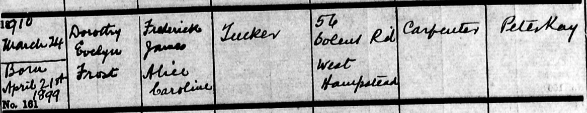
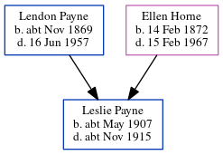

Dorothy Evelyn Frost Payne (née Tucker) 1899 - 1994
[ Home ] | [ Calendar ] | [ Surnames Index ] | [ Errors ] | [ Family History ]Dorothy Tucker, the wife of Lendon Harrison Payne (the first cousin twice-removed on the father's side of Nigel Horne), was born in West Hampstead, London, England on 21 Apr 18991,2,3,4 and baptised in Merton, London, England on 24 Mar 1910. She married Lendon (an assistant librarian) in Hampstead, London, England around May 19335.
During her life, she was living at Solent Road in Hampstead on 2 Apr 19111; and at 135 Eastcote Road, Ruislip, London on 29 Sept 19392.
She died on 29 Aug 1994 in Worthing, West Sussex, England4.
Citations
- 1911 Census for England & Wales - Findmypast (was age 11 and the daughter of the head of the household)
- 1939 Register - Findmypast (was recorded at this address)
- England & Wales births 1837-2006 - Findmypast
- England & Wales deaths 1837-2007 - Findmypast
- England & Wales Marriages 1837-2005 - Findmypast
Media
Dorothy Tucker - Baptism

1939 Register - TNA/R39/0871/0871E/013/17
England & Wales births 1837-2006 - BMD/B/1899/2/AZ/000613/289
England & Wales marriages 1837-2005 - BMD/M/1933/2/AZ/001271/100
England & Wales deaths 1837-2007 - BMD/D/1994/9/80369502
1911 Census for England & Wales - GBC/1911/RG14/00640/0623/3
Family Tree
Map
Generated by ged2site. Last updated on Jul 3, 2024
Known Issues
Baptism information not used to determine a parent
No records of living with anyone